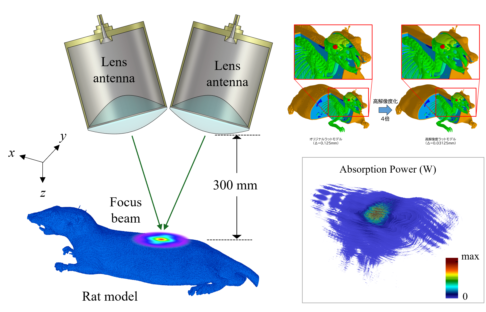

研究課題 / Research Topics
MIMO-OTA & Fading Emulator Research
携帯電話などの次世代無線端末に搭載されるMIMO（Multiple-Input Multiple-Output）アレーアンテナシステムの評価技術（Over-the-Air Testing）について研究開発を行っている。 システム化された端末アンテナの評価は、アンテナ単体の放射パターンやインピーダンス特性とは異なり、アンテナと伝搬特性から伝送特性（チャネル応答）を取得し、固有値や伝送容量が評価される点が特徴である。
MIMO-OTA測定の手法は大きく分けて、電波反射箱法と、端末周囲に仮想散乱体を配置してフェージング波を生成するフェージングエミュレータ法がある。 本研究室では富山大学と共同でフェージングエミュレータの研究開発を継続的に行い、ウェアラブルデバイスや車載アンテナの開発に資するOTA測定技術を提案している。

電波ばく露安全性に関する研究
携帯電話等の普及とともに、ミリ波（MMW: Millimeter Wave）帯電波の導入が予定されている。 一方、人体近傍に使用されているミリ波無線デバイスの拡大利用に従って、一般環境でのミリ波電磁界（EMF: Electromagnetic Field）による健康影響に対する懸念が高まっており、ミリ波帯電波ばく露による人体安全性について詳細な検討が求められている。
本研究では、皮膚組織を対象としてミリ波帯電波ばく露の及ぼす生体影響について調査し、ミリ波帯の電波ばく露の安全性に関する国際ガイドラインのエビデンスとなり得る知見を取得することを目的とする。

トンネル発破の自動化・無人化に関する研究
無線電子雷管システムの無線環境把握・解析・信頼性向上・通信方式の研究開発では、トンネル発破の省人化・無人化に向けたキーテクノロジとなる無線電子雷管の開発において、無線を利用することによる課題である信頼性向上を目指して、無線の電波伝搬状況や無線環境の把握技術の確立を行い、システム全体の信頼性に寄与する技術開発を行う。